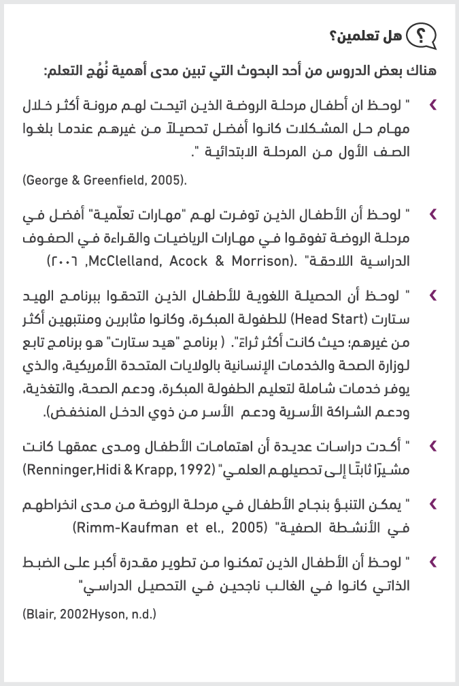
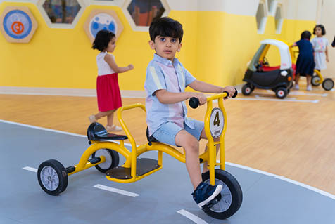
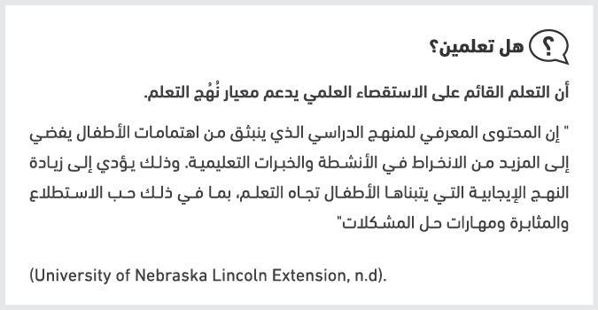
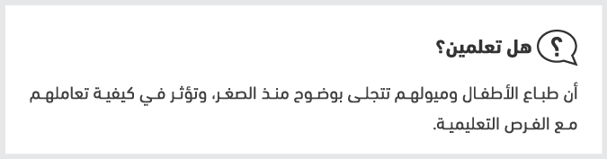
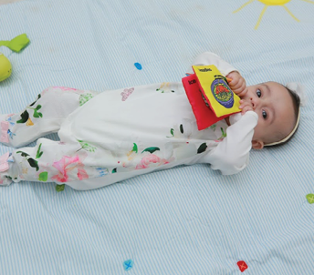
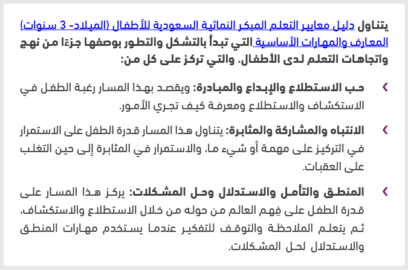
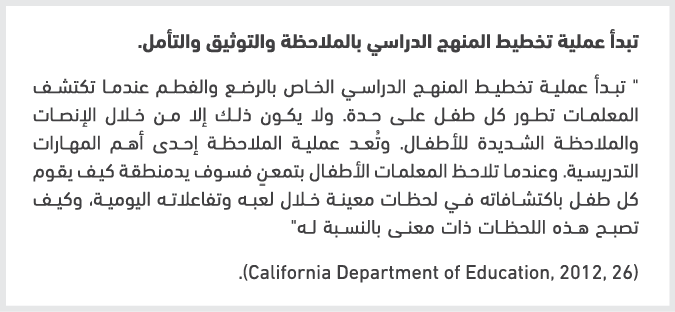
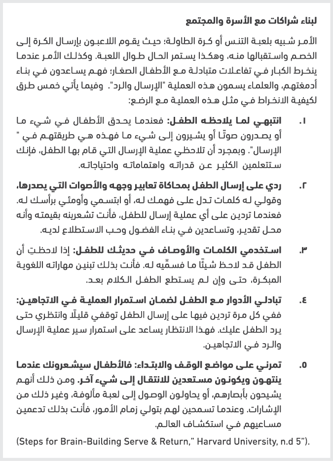
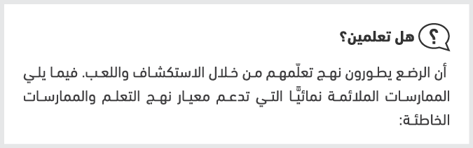
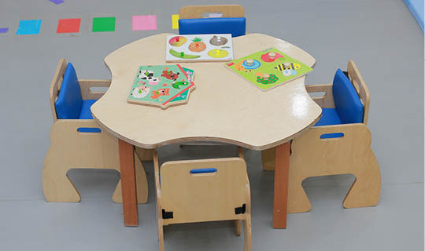

-

-
سلسلة الأدلة التطبيقية للمنهج الوطني ومعايير التعلم المبكر النمائية (٠-٦) سنوات
دليل معيار نهج التعلم
-
-
-
الفهرس
شكر وتقدير
7
مقدمة إلى أدلة المنهج الوطني
8
القسم الأول:
مدخل إلى معيار نهج التعلم
12
القسم الثاني:
دليل المعلمة في التخطيط وتطبيق الممارسات التربوية الداعمة لمعيار نهج التعلم -دعم معيار نهج التعلم من الولادة وحتى 6 سنوات)
18
فئة الأطفال الرضًّع الصغار (من الميلاد إلى 9أشهر)
21
الممارسة الأولى: وعي المعلمات المهنيات بمبادئ النمو والتطور لدى الطفل، والطريقة التي يمكن من خلالها دعم تعلّمه
21
الممارسة الثانية: توظيف المعلمات المهنيات لمعارفهنّ حول تطور الطفل والبناء على هذه المعارف
26
الممارسة الثالثة: تطبيق المعلمات المهنيات لخبرات التعلم القائمة على الاستقصاء العلمي
32
الممارسة الرابعة: حرص المعلمات المهنيات على التطور المهني والتعلُم المستمر.
39
فئة الرضّع الدارجين (من 9إلى 18 شهرا)
41
الممارسة الأولى: وعي المعلمات المهنيات بمبادئ النمو والتطور لدى الطفل، والطريقة التي يمكن من خلالها دعم تعلّمه
41
الممارسة الثانية: توظيف المعلمات المهنيات لمعارفهنّ حول تطور الطفل والبناء على هذه المعارف
50
الممارسة الثالثة: تطبيق المعلمات المهنيات لخبرات التعلم القائمة على الاستقصاء العلمي
54
الممارسة الرابعة: حرص المعلمات المهنيات على التطور المهني والتعلُم المستمر.
61
-
فئة الأطفال الفطم (من 15-36 شهرا)
65
الممارسة الأولى: وعي المعلمات المهنيات لمبادئ النمو والتطور لدى الطفل، والطريقة التي يمكن من خلالها دعم تعلّمه
65
الممارسة الثانية: توظيف المعلمات المهنيات لمعارفهنّ حول تطور الطفل والبناء على هذه المعارف
71
الممارسة الثالثة: تطبيق المعلمات الممهنيات لخبرات التعلم القائمة على الاستقصاء العلمي
75
الممارسة الرابعة: حرص المعلمات المهنيات على التطور المهني والتعلُم المستمر
85
فئة أطفال الروضة (3-4) سنوات
86
الممارسة الأولى: وعي المعلمات المهنيات بمبادئ النمو والتطور لدى الطفل، والطريقة التي يمكن من خلالها دعم تعلّمه
86
الممارسة الثانية: توظيف المعلمات المهنيات لمعارفهنّ حول تطور الطفل والبناء على هذه المعارف
94
الممارسة الثالثة: تطبيق المعلمات الممهنيات لخبرات التعلم القائمة على الاستقصاء العلمي
98
الممارسة الرابعة: حرص المعلمات المهنيات على التطور المهني والتعلُم المستمر
109
فئة أطفال الروضة (4-6) سنوات
105
الممارسة الأولى: وعي المعلمات المهنيات بمبادئ النمو والتطور لدى الطفل، والطريقة التي يمكن من خلالها دعم تعلّمه
112
الممارسة الثانية: توظيف المعلمات المهنيات لمعارفهنّ حول تطور الطفل والبناء على هذه المعارف
119
الممارسة الثالثة: تطبيق المعلمات المهنيات لخبرات التعلم القائمة على الاستقصاء العلمي
124
الممارسة الرابعة: حرص المعلمات المهنيات على التطور المهني والتعلُم المستمر.
140
المراجع
142
-
تتقدم وزارة التعليم في المملكة العربية السعودية لشركة تطوير للخدمات التعليمية والجمعية الوطنية لتعليم الأطفال الصغار بالشكر الجزيل للمساهمة في تأليف هذا الدليل.
يسرنا أن نتقدم بوافر الشكر والعرفان، بالنيابة عن جميع الأطفال الصغار وأسرهم، إلى كل التربويات العاملات في مجال تعليم الطفولة المبكرة في المملكة العربية السعودية لجهودهم المباركة في إنجاح هذا العمل.
شكر وتقدير
شكر خاص
-
الحمد لله رب العالمين والصلاة والسلام على أشرف الأنبياء والمرسلين سيدنا محمد وعلى آله وصحبه أجمعين وبعد.
تماشياً مع رؤية المملكة العربية السعودية (2030) والتي ركزت على مرحلة الطفولة المبكرة، وحرصت على أن يحصل كل طفل سعودي على فرص التعليم الجيد وفق خيارات متنوعة، وانطلاقاً من الأهداف الاستراتيجية لوزارة التعليم المرتبطة بتطوير المناهج وأساليب التعليم والتقويم، و بالاستناد إلى وثيقتَي إطار المنهج الوطني ومعايير التعليم المبكر النمائية في المملكة العربية السعودية للأطفال من الميلاد وحتى سن السادسة قامت وزارة التعليم بالتعاون مع شركة تطوير للخدمات التعليمية وبيت الخبرة الجمعية الوطنية لتعليم الأطفال الصغار (NAEYC) ، على بناء أدلة تطبيقية للمنهج الوطني للمعلمات في الحضانات ورياض الأطفال.
تستند الأدلة التطبيقية للمنهج الوطني على نظريات التعلم الأساسي والمبادئ التوجيهية التي تقر بأن الأطفال قادرون على التعلم، ومتفردون ويتطورون بمعدلات مختلفة، وأن التعلم يحدث عندما يشارك الأطفال في اللعب النشط والهادف خصوصًا عندما يتم تشجيعهم على استكشاف بيئتهم بحرّية. ومن أهم هذه المبادئ التركيز على التعلم القائم على الاستقصاء العلمي الذي يعتمد على تطور لعب الأطفال واستكشافهم الذاتي وانتقال معلمات الأطفال من نهج "التدريس والتلقين المباشر" إلى نهج التدريس الذي يتمحور حول الطفل. ويتم ذلك في إطار مبادئ الإسلام وثقافة الأسرة والمجتمع حيث تركز الأدلة على شراكة الأسرة الفاعلة في عملية التعلم. وفيما يلي تسلسل الأدلة وموضوعاتها:
الأدلة التطبيقية للمنهج الوطني:
- الدليل الأساسي: بناء وحدات التعلم لتطبيق إطار منهج الطفولة المبكرة للأطفال.
- الدليل التطبيقي للبيئة المادية للحضانة والروضة.
- الدليل التطبيقي للأسرة.
- الدليل التطبيقي لمعيار نهج التعلم.
- الدليل التطبيقي لمعيار التطور الاجتماعي والعاطفي.
- الدليل التطبيقي لمعيار التطور اللغوي والمعرفة المبكرة للقراءة والكتابة.
- الدليل التطبيقي لمعيار العمليات المعرفية والمعلومات العامة.
- الدليل التطبيقي لمعياري الوطنية والدراسات الاجتماعية والتربية الإسلامية.
- الدليل التطبيقي لمعيار الصحة والتطور البدني.
- دليل المعلمة التطبيقي لطرق واستراتيجيات التدريس.
- الدليل التطبيقي لدور الإدارة في تطبيق المنهج الوطني.
- الدليل التطبيقي لتقويم طفل الحضانة والروضة.
مقدمة إلى أدلة المنهج الوطني
-
دليل المعلمة التطبيقي لنهج التعلم هو الدليل الثالث ضمن سلسلة أدلة المنهج الوطني لرياض الأطفال والحضانات الذي يُعنى بالتركيز على تزويد معلمات الأطفال (من الميلاد حتى 6 سنوات) بما يلي:
- المعلومات التي يحتاجون إليها لفهم مظاهر النمو الخاصة بالأطفال من مختلف الفئات العمرية (من الميلاد - سنوات 6).
- مجموعة من الأدوات اللازمة للتخطيط والتدريس، والمصادر اللازمة لبناء خبرات تعلّم رفيعة المستوى لجميع الأطفال.
ينقسم هذا الدليل إلى قسمين اثنين؛ حيث يقدم القسم الأول منه نظرة موجزة حول معيار نهج التعلم، فيتناول تعريفه وأهميته، ويقدم القسم الثاني مناقشة تمهيدية للاعتبارات الرئيسة الداعمة لنهج التعلم خلال السنوات الأولى من الميلاد حتى سن السادسة، ويتبع ذلك إرشادات شاملة لتطبيق الممارسات التدريسية وتخطيط المناهج للأطفال في خمس فئات عمرية مرتبة حسب التصنيف الآتي:
- فئة الرضع الصغار (الميلاد - 9 أشهر).
- فئة الرضع الدارجين (6 - 18 شهراً).
- فئة الفطم (15-36 شهراً).
- فئة أطفال مرحلة الروضة (3-4 سنوات).
- فئة أطفال مرحلة الروضة (4-6 سنوات).
من خلال الدليل سنستعرض أفضل الممارسات التربوية اللازمة للمعلمات فيما يختص بكل فئة عمرية من هذه الفئات، وهي على النحو الآتي:
الممارسة الأولى: وعي المعلمات المهنيات بمبادئ النمو والتطور لدى الطفل، والطريقة التي يمكن من خلالها دعم تعلّمه. يتناول هذا القسم مجموعة من النصائح والمصادر العلمية التي تعين على فهم عملية التعلم والمستويات النمائية بصورة أعمق، إضافة إلى تقديم إرشادات عامة للمعلمات لمعرفة كيفية دعم نهج التعلم عند كل فئة عمرية من الفئات الآنفة الذكر.
الممارسة الثانية: توظيف المعلمات المهنيات لمعارفهنّ حول تطور الطفل والبناء على هذه المعارف من أجل خلق فرص تعلّمية لكل طفل في المجموعة.
يقدم هذا القسم مجموعة نصائح ومصادر علمية تختص بعملية الملاحظة والتوثيق التي تجريها المعلمات على الأطفال بصورة فردية أو ضمن مجموعات. ونستعرض كذلك
مقدمة دليل معيار نهج التعلم
-
الممارسات التربوية الملائمة نمائيًّا، وما يجب فعله وعدم فعله في هذا الباب، إضافة إلى نصائح لإشراك الأسر في تعلم أطفالهم.
الممارسة الثالثة: تطبيق المعلمات المهنيات لخبرات التعلم القائمة على الاستقصاء العلمي. وهنا ستجد المعلمة مجموعة من المصادر والإرشادات والأدوات المصممة لتعميق المعرفة بالمحتوى، وإثراء التفاعلات اليومية مع الأطفال، إضافة إلى دليل مكون من عدة خطوات للإسهام في تخطيط المنهج الدراسي. فأما فيما يختص بتخطيط منهج أطفال مرحلة الروضة فسيتم بناء معايير التخطيط استنادًا إلى مواضيع الاستقصاء العلمي ودورة التخطيط القائمة على الاستقصاء المشار إليها في كتاب الدليل الأساسي. في حين ستعتمد المعلمة على المعايير الخاصة بمرحلة الحضانة (الرضع والفطم) كتطبيق مبسط لدورة التخطيط التي ستراعي الاحتياجات التعليمية الفردية لهؤلاء الأطفال والمهام النمائية المرتبطة بهم. وفي المجمل فإن هذه الخطوات ستشمل الاعتبارات المتعلقة بالبيئة المادية التعليمية (مراكز التعلم والمواد التعليمية)، والجدول اليومي (بما يحتويه من تفاعلات وأعمال رعاية اعتيادية ولعب الأطفال)، ودمج معايير التعلم المبكر النمائية (المواءمة بين هذه المعايير والدور الذي تقوم به المعلمة).
الممارسة الرابعة: حرص المعلمات المهنيات على التطور المهني والتعلم المستمر. تم تصميم هذا القسم لتزويد المعلمات بالمصادر العلمية والمواد المقروءة التي ستمكنهنَّ من تعميق فهمهنَّ لمواضيع محددة، ويُختتم القسم بسلسلة من التوجيهات أو التنبيهات أطلقنا عليها اسم "لحظات التأمل"، وهي أسئلة للتأمل الذاتي السريع حول التجارب والخبرات والممارسات الشخصية.
استخدام الدليل:
أُعِدَّ الدليل ليكون مكملاً للمراجع الستة المهمة الآتية:
- (معايير التعلم المبكر النمائية في المملكة العربية السعودية للفئة العمرية من 3-6 سنوات، 2015).
- (معايير التعلم المبكر النمائية للفئة العمرية من الميلاد - 3 سنوات، 2018 ).
- (إطار المنهج الوطني للأطفال من الميلاد - 6 سنوات، 2018).
- (الدليل الأساسي: بناء وحدات التعلم لتطبيق إطار منهج الطفولة المبكرة للأطفال من الميلاد - 6 سنوات).
- (دليل المعلمة لتطبيق معايير التعلم المبكر النمائية من 3-6 سنوات).
- (دليل المعلمة لتطبيق معايير التعلم المبكر النمائية من الميلاد - 3 سنوات)
-
وستجدينَ أن هذا الدليل يشير إلى المراجع السابقة في كثير من المواطن. ولذلك ننصحك قبل استخدام هذا الدليل بالاطلاع على هذه المراجع وزيارة الروابط الإلكترونية حيثما وردت. يحتوي الدليل على عدد من الأيقونات للمساعدة على تصفح الدليل وإيجاد المعلومة والمصادر العلمية. كما تمت إضافة صور ومقاطع فيديو لتقديم المزيد من الدعم لفهم أوضح للمحتوى في حال تم تقديمه بصورة عملية.
وأخيرًا فقد تم إدراج مواقف افتراضية لمجموعة من المعلمات خلال هذا الدليل لتقديم أمثلة على ممارسات تدريسية معينة، وكيف يمكن للمعلمة التعامل معها، ومعالجتها، ووضع الخطط المناسبة لذلك. وسيتبع هذا الدليل خطوات مجموعة من المعلمات، بعضهن متخصصات بمرحلة الحضانة (الميلاد - 3 سنوات)، والبعض الآخر متخصصات بمرحلتي الروضة (3 - 6 سنوات). وستتمكنينَ أيتها المعلمة من متابعتهنَّ في مواطن رئيسة في الدليل، بما في ذلك الاطلاع على كيفية تطوير كل معلمة من هؤلاء المعلمات لخطط المنهج الدراسية حسب كل فئة عمرية. وكيف تمكنت كل معلمة من هؤلاء المعلمات إلى توظيف الموضوع الدراسي نفسه، وذلك لبيان كيف أنه بالإمكان استخدام هذه المواضيع الاستقصائية مع كافة المراحل والفئات العمرية للأطفال. وسنجد كذلك كيف أنه بالإمكان توسيع مراكز التعلم (أركان التعلم) والأنشطة وتعميقها تبعًا لأعمار الأطفال وقدراتهم، وتبعًا لتفضيلات المعلمات واختياراتهنَّ أيضًا.
يسرنا الآن أن نعرفك على هؤلاء المعلمات من مركز تعليم الطفولة المبكرة
مرحلة الحضانة:
المعلمة جنان: معلمة فصل الرضّع الصغار (الميلاد - 9 أشهر) .
المعلمة سمر: معلمة فصل الرضّع الدارجين (6 - 18 شهرًا).
المعلمة نورة: معلمة فصل الفطم (15 - 36 شهراً) .
مرحلتا الروضة:
المعلمة فاطمة: معلمة فصل الروضة (3 - 4 سنوات).
المعلمة إيمان: معلمة فصل الروضة (4 - 6 سنوات).
-
 يتناول معيار
نهج التعلم كيفية تعلم الأطفال. الذي يصف بصفة خاصة الأدوات والمهارات التي تسهل عملية تعلم الأطفال. ويتضمن ذلك السلوكيات والاتجاهات التي تدعم عملية التعلم في جميع الجوانب النمائية والتعليمية، مثل: الاهتمام الفطري وحب الاستطلاع، والقدرة على الانتباه للمهام التي يتم التكليف بها والمشاركة فيها والمثابرة على أدائها، والتفكير المنطقي وحل المشكلات بطريقة فردية أو تعاونية" (معايير التعلم المبكر النمائية في المملكة العربية السعودية للفئة العمرية من 3-6
سنوات، 2015، 17).
يتناول معيار
نهج التعلم كيفية تعلم الأطفال. الذي يصف بصفة خاصة الأدوات والمهارات التي تسهل عملية تعلم الأطفال. ويتضمن ذلك السلوكيات والاتجاهات التي تدعم عملية التعلم في جميع الجوانب النمائية والتعليمية، مثل: الاهتمام الفطري وحب الاستطلاع، والقدرة على الانتباه للمهام التي يتم التكليف بها والمشاركة فيها والمثابرة على أدائها، والتفكير المنطقي وحل المشكلات بطريقة فردية أو تعاونية" (معايير التعلم المبكر النمائية في المملكة العربية السعودية للفئة العمرية من 3-6
سنوات، 2015، 17).مواقف افتراضية
ترغب معلمات مرحلة الحضانة بالاستمرار في التركيز على تكوين علاقات مع الأطفال الرضع وأسرهم، ومساعدة هؤلاء الأطفال على تطوير الشعور بالذات اللازم لأن يصبحوا متعلمين واثقين بأنفسهم ومستقلين بذواتهم عندما يتلقون الرعاية ضمن مجموعات. وتعلم هؤلاء المعلمات أن النُهج التي يتبعها الأطفال في التعلم جزء مهم من تطورهم. ويعلمنَ كذلك أن هذه النُهج تتشكل أول ما تنشأ من اهتمام الأطفال بالعالم المحيط بهم والرغبة في التسبب بحدوث الأشياء.
تخطط كل من المعلمة جنان (معلمة الرضع الصغار) والمعلمة سمر (معلمة الرضع الدارجين) بناء على معارفهن السابقة بالرضع، وكيف أنهن يطورن نهُجًا خاصة بالتعلم. وسيعملن على وضع خطط فردية يمكن استخدامها مع أطفال محددين، تقدم فرصًا تعليمية يمكن دمجها في أعمال الرعاية الاعتيادية، والتفاعلات المستمرة للأطفال، وبيئة اللعب.
مدخل إلى معيار نُهُج التعلم
القسم الأول
-
لاحظت المعلمة جنان أن العديد من الرضع الصغار (من الميلاد - 9 أشهر) قد أصبحوا مذهولين بقدرتهم على التسبب بحدوث الأشياء، وذلك من خلال إمساك ما تقع أيديهم عليه والتجريب والمحاولة مرارًا وتكرارًا حتى يحدث أمر معين. وهذا يدل على فضول الأطفال ونشوء حب الاستطلاع ومهارة حل المشكلات لديهم؛ ولذلك تخطط المعلمة لتوفير مواد تعليمية وتفاعلات من أجل البناء على هذه الاهتمامات المبكرة للأطفال.
أما المعلمة سمر فقد لاحظت أن الرضع الدارجين (من 6 - 18 شهرًا) يعملون على اختبار مهاراتهم الجديدة من خلال اقتحام البيئة المحيطة بهم بمفردهم، والعمل على حل المشكلات من خلال الالتفاف حول ما يعترضهم من عقبات؛ سعيًا إلى الوصول إلى لعبة أو شيء ما. كما أنهم يلجؤون إلى استخدام الأدوات، ويظهرون عزمًا وإرادة لمعرفة عمل الأشياء الجديدة وكيفية عملها. وتقوم خطتها على توظيف هذه المعلومات؛ لتوفير الكثير من الفرص التي تتحدى الأطفال خلال اليوم، بهدف تعميق تجاربهم في الاستكشاف والمحاولة والتجريب.
المعلمة نورة، معلمة فصل الفطم، فهي تخطط لتقديم موضوع استقصائي للأطفال يركز على الحيوانات وعائلاتها ومساكنها. وعندما كانت الوحدة الدراسية المقررة هي وحدة " أنا وأسرتي" كانت أركان التعلم تركز على الأسرة والمنزل بشكل كبير خلال الأسبوع الأول من السنة الدراسية. ويسود لدى المعلمة نورة اعتقاد بأن الفطم سيكونون مهتمين أكثر بقضية العناية بصغار الحيوانات وأسمائها، وكذلك استكشاف الأماكن العديدة التي تعيش فيها الحيوانات؛ لذلك تنوي استخدام هذا التركيز على الحيوانات وسيلةً لمساعدة الفطم على ممارسة نُهُج مهمة من مهمات نهج التعلم وأساليبه. وتريد المعلمة نورة استغلال مهارات الفطم اللغوية والمعرفية الناشئة لاكتشاف ما يعرفونه، ولتخطيط أنشطة وتفاعلات تعكس مهاراتهم واهتماماتهم الفردية والجماعية.
أما معلمات مرحلتي الروضة فإنهنَّ يعكفن على وضع خطط دراسية لإشراك الأطفال في استقصاءات علمية عن الحيوانات. وتعلم هؤلاء المعلمات أن الأطفال الصغار ينتبهون للحيوانات، وينجذبون لفكرة الحديث عنها؛ لذلك أخذنَ يفكرنَ بالمواضيع الدراسية التي لربما توفر فرصًا لدعم معيار نُهُج التعلم عند الأطفال. وعلى الرغم من اختلاف كل من المنطقة التعليمي المستخدم، ودرجة تعقيد الأنشطة، والمواد التعليمية في كل فصل من الفصول الدراسية؛ فإن المعلمات متيقنات بأن هذا الموضوع سيثير فضول الأطفال وحب الاستطلاع لديهم، وسيؤدي إلى العديد من الاكتشافات الجديدة، ويفتح الباب أمام معارف لم تكن موجودة من قبل لدى الأطفال.
-
ويتبنى هذا النهج الاستقصائي فكرة النهاية المفتوحة للعملية. وعندما يتم تقديم أنشطة أو خبرات تعليمية للأطفال الصغار فنحن لا نعلم ما الذي سيفعلونه بهذه الأنشطة والخبرات. وردودهم تعد تلميحًا وإشارة لما "يجب فعله لاحقًا"، وما السبب في أنه ستكون هناك اختلافات في عملية الاستقصاء العلمي لدى كل فئة عمرية وفصل دراسي.
وأما معلمة فصل الروضة، المعلمة فاطمة، والمعلمة إيمان، معلمة مرحلة الروضة، فكلتاهما تعكفان على خطة دراسية تركز على الحيوانات التي تعيش في المزرعة. وستستخدمان في خطتيهما كتبًا وخبرات تعليمية أخرى من أجل مساعدة الأطفال على التعلم أكثر عن المزارع وحيواناتها. وستصغيان جيدًا لما يطرأ على اهتمامات وأسئلة الأطفال، ثم توفير الخبرات التي تعكس هذه الاهتمامات الخاصة.
ولقد ناقشت المعلمات الخمس هذه المواضيع الاستقصائية فيما بينهن، وكيف أن هذه المواضيع ستتغير أو يتم توسيعها على الأرجح كلما عرفن أكثر عن الأطفال أو تعلمن منهم من خلال إشراكهم في أنشطة مختلفة، وتعريضهم لأفكار جديدة، وملاحظة تفاعلاتهم وتحرياتهم العلمية. كما تدرك هؤلاء المعلمات أن كل دورات الاستقصاء العلمي الخاصة بالفئات العمرية للأطفال مرتبطة فيما بينها، ولكنها تصبح أكثر تعقيدًا ودقةً عند الأطفال الأكبر سنًّا.
السؤال: ما هو نُهُج التعلم؟
الجواب: تشير نُهُج التعلم إلى الطرائق التي يستجيب من خلالها الأطفال للخبرات والفرص التعليمية. فعلى عكس المجالات النمائية الأخرى التي تركز على المعرفة بالمحتوى العلمي، والمهارات النمائية، وتطوير المفاهيم العلمية، أي أن التركيز يكون على ما يتعلمه الأطفال؛ تركز نُهُج التعلم على الطرائق التي يسلكها الأطفال من أجل اكتساب المعارف الجديدة.
السؤال: لماذا يُعدّ معيار نُهُج التعلم معيارًا مهمًّا؟
الجواب: تؤثر النهج الإيجابية للتعلم في التطور في مختلف المجالات الأخرى، وتسهم إسهامًا مباشرًا في النجاح المدرسي، وتؤدي إلى بناء ميول واستعدادات تكون محل تقدير من قبل معلمات مرحلة الروضة والمرحلة الابتدائية. وإن دعم المعلمات لهذا المعيار يساعد الأطفال في اكتساب المعارف الجديدة، وتطوير المهارات اللازمة، وتحديد الأهداف وبلوغها بنجاح.
-

-
السؤال: ما الاستراتيجيات التدريسية التي تدعم معيار نُهُج التعلم؟
الجواب: نستعرض فيما يأتي عشر استراتيجية تدريسية ملائمة نمائيًّا يمكن لها أن تدعم معيار نُهُج التعلم لدى الأطفال من مختلف الفئات العمرية ومراحل التطور
(NAEYC, “10 Effective DAP Teaching Strategies”, n.d.)
- " تقدير ما يقوله الأطفال وما يفعلونه. والتأكد من أن الأطفال يعلمون بأننا قد لاحظناهم من خلال إيلاء الانتباه الإيجابي لهم الذي قد يكون في شكل تعليقات نقولها لهم، أو قد يكون من خلال الجلوس بجانبهم والمراقبة. (مثال: " شكرًا لك يا أحمد. لقد وجدت طريقة أخرى لتحديد الرقم (5)".
- تشجيع الأطفال على المثابرة وبذل الجهد بدلًا عن مجرد الثناء عليهم وتقييم ما فعلوه. (مثال: أنت تفكر بكثير من الكلمات لكي تصف الأرنب في القصة. هيا، لنتابع!".
- إعطاء ملاحظات محددة بدلًا عن التعليقات العامة. (مثال: "لم تدخل الكرة في السلة يا عادل. ماذا لو رميتها بقوة أكثر").
- نمذجة المواقف، وأساليب التعامل مع المشكلات، والسلوكيات تجاه الآخرين، والتمثيل العملي للأطفال وليس مجرد إخبارهم ما الذي عليهم فعله. (مثال: " مممم! لم ينجح ذلك. يجب عليَّ أن أفكر في السبب". " اعذرني يا سعد. لقد فاتني شيء مما قلت. هلا أعدت علي ما قلته"!).
- بيان وإظهار الطريقة الصحيحة لفعل شيء ما. وعادة ما يشمل ذلك وجود عملية ينبغي فعلها بأسلوب معين (مثل كيفية استخدام خافق البيض، أو طريقة كتابة حرف الجيم).
- إيجاد أو إضافة تحدٍّ إلى مهمة ما بحيث تزيد درجة صعوبته قليلًا عما يستطيع الأطفال فعله. فمثلًا: تضع المعلمة مجموعة من حبوب الذرة أو البطاطس على سطح نظيف وتعدها مع الأطفال، ثم تطلب من مجموعة صغيرة منهم أن يخبروها كم عدد الحبوب الباقية عندما تزيل بعضًا منها. فيقوم الأطفال بعدِّ الحبوب المتبقية من أجل معرفة الجواب:. ولإضافة نوع من التحدي إلى هذا النشاط، فقد تقوم المعلمة بإخفاء الحبوب الباقية بعد أن تزيل عددًا منها. وهنا على الأطفال إيجاد طريقة أخرى لمعرفة العدد المتبقي سوى طريقة عدّها. ولتسهيل التحدي قد تطلب المعلمة من الأطفال لمس كل حبة لمرة واحدة في أثناء قيامهم بعدِّ الحبوب المتبقية.
- طرح أسئلة تثير تفكير الأطفال وتحفزه. (مثال: " كيف يمكنك إخبار صديقك الذي يلعب معك بما يفعل دون كلام؟").
-
- تقديم العون (مثل: تقديم تلميح أو إشارة) لمساعدة الأطفال على العمل وفقًا لقدراتهم (مثال: " هل يمكنك التفكير بكلمة على وزن اسمك يا هادي؟ ما رأيك بكلمة "رامي"؟ هادي ورامي لهما الوزن نفسه، أليس كذلك؟ هل يمكنك التفكير بكلمة أخرى على الوزن نفسه؟").
- تقديم المعلومات والحقائق والأسماء للأطفال بعبارات لفظية مباشرة. (مثال" هذا الحيوان الذي يشبه القط ولكنه أكبر حجمًا ولونه أسود يسمى الفهد").
- توجيه سلوك الأطفال وتصرفاتهم. (مثال: " المسوا كل مكعب من المكعبات مرة واحدة فقط وأنتم تعدونها". " عليك أن تحرك تلك الأيقونة إلى هنا، ألا تظن ذلك؟ حسنًا، اضغط عليها الآن واستمر بالضغط، ثم اسحبها إلى المكان الذي تريد وضعها فيه").
-
مقدمة
دعم معيار نهج التعلم من الولادة وحتى ٦ سنوات
يُعد حماس الأطفال للتعلم وانخراطهم فيه من المبادئ الأساسية للنجاح المدرسي. وقد تلعب بيئات برامج الطفولة المبكرة دورًا مهمًّا في دعم ذلك المعيار أو هدمه. وقد لوحظ أن العوامل البيئية المختلفة التي تزيد من تلك الدافعية تجاه التعلم والانخراط فيه موجودة في الأصل في اللعب ذي الجودة العالية ومتضمنة فيه " (Hyson, n.d.)

دليل المعلمة في التخطيط وتطبيق
الممارسات التربوية الداعمة لمعيار نُهج التعلم
القسم الثاني
-

الطبع هو مزيج من الميول التي تشكل بمجموعها الطريقة الطبيعية التي يتفاعل بها شخص ما مع الناس والأشياء والأحداث. وله ارتباط بالعديد من الأمور المهمة في الحياة فيما بعد، كالعلاقات والتحصيل الدراسي والصحة (Shiner et al., 2012) وتتكون معظم الميول الطبيعية في فترة مبكرة من الحياة، وتؤثر في الطريقة التي يرى الأطفال من خلالها العالم ويتفاعلون معه، ولهذه الميول محددات مثل: العوامل الوراثية والبيولوجية والبيئية (Shiner et al., 2012)، ويتم التعبير عنها بمستويات تختلف من حيث القوة والمدة (WestEd, 2019).
- "مستوى النشاط يعبِّر مستوى النشاط عن شدة الحركة وسرعتها والتعبير الصوتي عند شخص ما" (Strelau & Zawadzki, 2012).
- " التصرف تجاه غير المتوقع ما يتعرض له الشخص من قلق وحذر عند مقابلة أناس غرباء، أو مواجهة أشياء والتعرض لمواقف غير مألوفة" (Kagan, 2012).
- " الانتباه والضبط وهي قدرة المرء على تنظيم وضبط عواطفه وسلوكياته طوعًا، والقدرة كذلك على توجيه الانتباه والمحافظة عليه وتغييره طوعًا" (Rueda, 2012).
- "الغضب وحدة الطبع والإحباط مستوى الحساسية تجاه البيئة الاجتماعية والمادية الذي يتجلى في صور كالغضب أو الانفعال أو الإحباط"
(Deater-Deckard & Wang, 2012).
- " البهجة والحماس: مستوى الاستمتاع المصاحب للأنشطة التعليمية وما يجده الفرد من متعة الوصول إلى الأهداف" (Putnam, 2012).
-
دعم معيار نُهُج التعلم عند أطفال الحضانة:
ملاحظة مهمة: يجب مراعاة المبادئ التوجيهية الآتية عند العمل على تطوير منهج دراسي مخصص للرضع والفطم يراعي جميع مجالات التعلُّم:
- "الأسرة هي محور التعلُّم والتطور بالنسبة للطفل.
- يعتمد التعلُّم والتطور لدى الرضع والفطم على العلاقات الإنسانية.
- العواطف هي المحرك والدافع للتعلم والتطور المبكرين.
- إن الاستجابة للاستكشاف الذاتي للأطفال يعزز التعلم.
- التعليم والرعاية المصممان حسب احتياجات كل طفل يفيدان جميع الأطفال.
- الاستجابة للثقافة واللغة تدعم تعلم الأطفال.
- التعليم والرعاية المقصودان يثريان الخبرات التعلُّمية للأطفال.
- الوقت الذي يتم تخصيصه للتأمل والتخطيط يعزز التعليم والرعاية”.
("California Infant/Toddler Curriculum Framework", 2012)
كما يجب مراعاة أن منهج الرضّع والفطم يعتمد على:
- بيئة اللعب التي تقومين بتنظيمها وإعدادها.
- التفاعلات والمحادثات التي تجرينها مع الأطفال.
- الخبرات التعليمية التي توفرينها للأطفال خلال أوقات الرعاية الاعتيادية (تغيير الحفاضات، الإطعام، تغيير الملابس).
-
تطبيق معيار نهج التعلم عند الأطفال الرضًّع الصغار (من الميلاد إلى 9 أشهرٍ)
معلمات الرضع الصغار يعلمن أن الأطفال يبدؤون بالتعلم عن العالم الجديد الذي قدموا إليه منذ لحظة ولادتهم. فنراهم يستخدمون جميع حواسهم لاستكشاف الأشياء من حولهم ومعرفة كيف يتصرفون تجاهها”.
(NAEYC, The What, Why, & How of High-Quality Programs for Infants, p.3)
السؤال: ما الذي تفعله المعلمات المهنيات لتوظيف معيار نهج التعلم ضمن المنهج الدراسي الخاص بفئة الرضع الصغار (من الميلاد إلى 9 أشهرٍ)؟
الجواب: يمكن للمعلمات المهنيات اتباع أربع ممارسات مثلى، وهي:
الممارسة الأولى
وعي المعلمات المهنيات بمبادئ النمو والتطور لدى الطفل، والطريقة التي يمكن من خلالها دعم تعلّمه.
إن المعلمات المهنيات يفهمن طبيعة الأطفال الرضًّع الصغار والأشياء التي يتعلمونها.

-
السؤال: ما المؤشرات الرئيسة النمائية المتوقعة التي يظهرها الرضع الصغار والمرتبطة بمعيار نهُج التعلُّم؟
الجواب: من الميلاد حتى تسعة أشهر: يُلاحظ أن الأطفال في هذه المرحلة:
- يستخدمون حواسهم لاستكشاف البيئة.
- يطورون اهتمامًا وتفضيلًا لألعاب أو أشياء معينة.
- يبدؤون بتركيز الانتباه على الصور والوجوه والأشياء المثيرة للاهتمام.
- يلجؤون إلى التواصل البصري للتواصل مع حاضناتهم.
- يبدؤون بالقيام بأعمال بسيطة للتسبب في حدوث الأشياء.
 تعزز
المعلمات المهنيات نمو الأطفال نمائيًّا.
تعزز
المعلمات المهنيات نمو الأطفال نمائيًّا.
(إطار المنهج الوطني للأطفال من الميلاد-6 سنوات، 2018، 38-40).السؤال: ما الذي أستطيع فعله بوصفي معلمة لمساعدة الرضع الصغار على إنجاز المهام المرتبطة بمعيار نُهُج التعلم؟
الجواب: تستطيعين القيام بما يلي
- تعلمي كيف تقرئين إيماءات الرضع وتلميحاتهم. فهذه الإشارات والتلميحات تساعدك على التعرف على اهتماماتهم والأشياء التي يفضلونها.
- كوني مرحة. العبي معهم فإن نهُج التعلم لدى الرضع تتطور من خلاله.
- وفري مجموعة من المواد تختلف في ألوانها وخاماتها وأصواتها وأشكالها. فهؤلاء الأطفال يتعلمون من خلال حواسهم؛ لأن التنويع في المواد سيثير فضولهم.
- صممي الجدول اليومي للرضع بحيث يكون ثابتًا، واحرصي على أن تكون أعمال الرعاية الاعتيادية ثابتة كذلك. فذلك يوفر لهم الإحساس بالأمان اللازم لاستكشاف عالمهم.
-
السؤال: ما الأشياء التي بوسعي فعلها لإيجاد بيئة تعليمية تدعم معيار نُهُج التعلم؟
الجواب: بوسعك القيام بما يلي:
- احرصي على أن تكون مساحات البيئة التعليمية جذابة ومريحة، وآمنة أي أن تكون خالية من الإزعاج الصوتي والمثيرات البصرية.
- احرصي على أن يكون كل ما يحيط بالرضيع من أشياء ينظر إليها، أو يستمع لها، أو يلمسها، أو يستكشفها قد تم توفيرها بصورة مقصودة لدعم المشاركة والتركيز.
- وفري مواد وأشياء تعكس ثقافة الطفل وأسرته.
- غيري المواد التعليمية من حين إلى آخر بما يتناسب مع التطور السريع للرضيع، وبما يراعي اهتماماته المتنامية.
- ضعي الأشياء حيث يستطيع الرضيع الوصول إليها بمفرده (أي ضعيها على أرفف منخفضة الارتفاع مع عرضها بوضوح ليختار منها).
- رتبي المواد والأشياء ضمن مجموعات تشجع على نوع معين من التعلم (مثلًا: الأشياء الخاصة بالأركان الهادئة ضمن مجموعة واحدة، والمواد الخاصة بأركان التعلم الصاخبة ضمن مجموعة أخرى… وما إلى ذلك).
إرشادات للمعلمة
 على الرغم من أن الجدران التي تحتوي على عدد قليل من الصور والأشياء
المعلقة قد تبدو أقل جمالًا، لكنها في الحقيقة مريحة أكثر لعيون الرضع الصغار من الجدران التي تمتلئ بالصور
والألوان البراقة"
على الرغم من أن الجدران التي تحتوي على عدد قليل من الصور والأشياء
المعلقة قد تبدو أقل جمالًا، لكنها في الحقيقة مريحة أكثر لعيون الرضع الصغار من الجدران التي تمتلئ بالصور
والألوان البراقة"(Luckenbill, Subramaniam & Thompson, 2019).
-
أدوات للمعلمة
يتطلب إعداد وتنظيم بيئة تعليمية تدعم عمليات التعلم والاستكشاف المتزايدة عند الرضع الكثير من التفكير والتأمل. وعلى المعلمة الموازنة بين متطلبات السلامة من جهة وبين عناصر التحدي واهتمامات الأطفال والمساحة المتاحة والمواد التعليمية المتوفرة من جهة أخرى والألوان البراقة"
(Luckenbill, Subramaniam & Thompson, 2019).
أدوات المعلمة
سلال الكنوز
عندما يصبح الرضع قادرين على الوصول إلى الأشياء والإمساك بها فإنهم يستمتعون بوجود مجموعة مختارة من الأشياء والمواد المثيرة للاهتمام في الجوار؛ لذلك تحرص المعلمة على وضع أشياء مختلفة في أنحاء الغرفة مثل: ملاعق الكيل، والخشخيشات، والكرات القماشية، والمكعبات الطرية، والكرات ذات الملامس المختلفة، ونحو ذلك من المواد. ثم ضعيها في سلة، وضعي السلة حيث يستطيع الرضع الوصول إليها. وسيستمتع الرضع بهذه السلال في أثناء الوقت الذي يوضعون فيه على بطونهم للاستكشاف والحركة. (نصيحة تتعلق بالسلامة تأكدي من أن جميع هذه الأشياء ذات حجم كبير بما يكفي حتى لا يبتلعها الأطفال، وتأكدي كذلك من خلوها من الحواف الحادة أو أي شيء قد يُلحق الضرر بالأطفال).
إرشادات للمعلمة
تدعم سلال الكنوز معيار نُهُج التعلم من خلال توفير الفرص التعليمية الآتية:
- التركيز والانتباه.
- الاستكشاف باستخدام عدة حواس.
- توفير عدة خيارات.
- التجريب وحل المشكلات.
-
إرشادات للمعلمة
ما الألعاب التي يحب أن يمارسها الرضع؟
في حالة الرضع الذين لا يستطيعون فتح قبضاتهم عند الإمساك بشيء ما، وفري لهم ألعابًا وعلقيها فوق سجادة أو دعيها تتدلى من السقف كي يتسنى للطفل اللعب بها ورفسها بقدمه، أو ضربها بيده، أو الإمساك بها وسحبها إليه (وهنا على المعلمات مراقبة الرضع عن كثب عندما يصبحون قادرين على السحب). فهذه الألعاب تساعد الرضع على تعرُّف الأشياء التي يبصرونها والأصوات التي يسمعونها من حيث الآتي:
- بأنها تصدر الأصوات.
- ولها ملامس ممتعة.
- وتتبع أنماطًا سهلة وأخرى غير ذلك.
وبمجرد أن يبدأ الرضع بالسيطرة على أيديهم قدمي لهم الأشياء الآتية:
- خشخيشات بسيطة وخفيفة الوزن.
- ألعابًا بملامس مختلفة.
- كتبًا مصنوعة من القماش.
ووفري أشياء للنظر إليها مثل:
- الكتب والصور التي تحوي رسومات جاذبة (بعض الرضع الصغار يفضل الصور ذات اللونين الأبيض والأسود التي تبدو كالوجوه).
- الأعمال الفنية الدارجة بحيث يتم عرضها على الجدار.
- أشياء ومجسمات معلقة في الهواء.
- أحواض الأسماك.
- النباتات والزهور.
وفري أشياء للتعامل بها بالأيدي لتجميعها: ابدئي بالأشياء التي تساعد الرضع في معرفة كيفية عمل الأشياء، وهذا مناسب في حالة الرضع الصغار، مثلًا: وفري لهم الأشياء الآتية:
- دمى حيوانات مصنوعة من القماش، حلقات ومكعبات، خشخيشات، ويجب أن تكون كل هذه الأشياء ذات ملامس وأحجام مختلفة:
- دمى ومستلزمات مثل: القبعات والأكواب والملاعق.
-
وما إن يبدأ الرضع باكتساب المهارات اللازمة وتزداد قدراتهم على الانتباه حتى يبدؤوا بالتحول من تفحص خصائص الأشياء باستخدام حواسهم إلى استعمالها؛ لذلك وفري أشياء كي يتمكن الرضع من القيام بالآتي:
- طرقها ببعض، والتعامل معها بالأيدي، وإلقائها من أيديهم (من هذه الأشياء الصناديق التي تستخدم في عمليات التصنيف إضافة إلى بعض الأشكال الهندسية، وعلب المناديل على أن تُملأ بمناديل قماشية أو أوشحة لسحبها، ومكعبات من مختلف الأحجام والأشكال).
.(Luckenbill, Subramaniam & Thompson, 2019)
الممارسة الثانية
توظيف المعلمات المهنيات لمعارفهنّ حول تطور الطفل والبناء على هذه المعارف من أجل خلق فرص تعلّمية لكل طفل في المجموعة.
تلاحظ المعلمات المهنيات وتوثق تعلم وسلوكيات الأطفال .(إطار المنهج الوطني للأطفال من الميلاد-6 سنوات، 2018، 38-40).

أدوات المعلمة
استمارة ملاحظة طباع الأطفال في أثناء دعم نهج التعلم عند الأطفال.
"يُقصد بالطبع الخصائص والميول والسمات التي تميز أسلوب كل طفل وسلوكه، ويصف الأسلوب الشخصي للطفل في كيفية التعامل مع العالم من حوله. وقد حدد الباحثون خصائص وسمات مختلفة تبين معنى الطبع. إن فهم طباع الأطفال يساعد المعلمات في فهم سلوكياتهم ونهجهم في التعلم وتقبلها ودعمها. وتساعد أداة الملاحظة هذه في تحديد خمس مجموعات من الخصائص والصفات،
-
يتعين على المعلمة البحث عنها في أثناء تفاعلها مع الرضع والأطفال الأكبر سنًّا وهي:
1- مستوى النشاط يقصد بمستوى النشاط مدى قدرة الأطفال على الحركة وإصدار الأصوات وشدة كل منها وسرعتها. عليك الانتباه لما يلي:
- مستوى منخفض من النشاط: يميل الأطفال الذين يتمتعون بمستوى منخفض من النشاط إلى المراقبة أكثر وإصدار الأصوات ببطء.
- مستوى مرتفع من النشاط: يتحرك هذا النوع من الأطفال دائمًا ويصدرون أصواتًا ذات وتيرة سريعة.
2- التصرف تجاه غير المتوقع أي طريقة تصرف الطفل تجاه المواقف غير المألوفة له، والأنشطة والناس والأشياء الغريبة عليه، وهل يتملكه الضيق أو الخوف عند حدوث ذلك. عليك الانتباه لما يلي:
- فالأطفال الذين تكون ردة الفعل عندهم خفيفة تجاه ما هو غير متوقع يتقبلون المواقف والناس الجديدة عليهم.
- أما الأطفال الذين تكون ردة الفعل عندهم شديدة تجاه ما هو غير متوقع فهؤلاء يتملكهم الخوف والضيق (فتراهم يلتصقون بالحاضنة أو يبدؤون بالمراقبة بحذر من بعيد).
3- الانتباه والضبط أي قدرة الطفل على تنظيم وضبط عواطفه وسلوكياته، وتركيز انتباهه طوعًا والمحافظة عليه أو تحويل انتباهه إلى شيء آخر. عليك الانتباه لما يلي:
- ينتقل الأطفال الذين يتمتعون بمستويات منخفضة من القدرة على الانتباه والضبط من مهمة إلى أخرى بسرعة، وقد لا يكونون قادرين على ضبط سلوكياتهم وعواطفهم.
- بينما يستطيع الأطفال الذي يتمتعون بمستويات مرتفعة من الانتباه والضبط التركيز لفترات طويلة على مهمة ما (بالنسبة لأعمارهم)، ويتحكمون بسلوكياتهم وعواطفهم بسهولة أكبر.
ملاحظة: يتشكل الضبط لدى الأطفال ويتطور بمرور الوقت وبدعم من الحاضنات.
-
4- الغضب وحدة الطبع والإحباط ونعني بذلك ميل الطفل ونزعته للتعبير عن مثل هذه المشاعر والعواطف. والتعبير عن هذه المشاعر بشدة ولمدة طويلة قد يشكل تحديًا للحاضنات. عليك الانتباه لما يلي:
- الشدة: أي قوة ردة الفعل.
- العتبة: أي مستوى التحفيز والإثارة الذي تبدأ معه ردة الفعل.
- المدة: الوقت الذي تستغرقه ردة الفعل عادة.
5- الهمة والحماسة والابتهاج ونعني بذلك ميل الطفل نحو تجريب هذه المشاعر ونزعته للتعبير عنها. وعلى الرغم من أن هذه الخصائص والسمات قد تبدو جذابة لكل من الكبار والصغار، فإن المبالغة فيها قد تؤدي في بعض الأحيان إلى إرباك الأطفال ويحد من قدرتهم على ضبط الذات. عليك الانتباه لما يلي:
- الشدة: أي قوة العاطفة وشدتها.
- العتبة: أي مستوى التحفيز والإثارة الذي تبدأ معه العاطفة بالظهور.
- المدة: المدة التي تستغرقها العاطفة.
اطرحي على نفسك الأسئلة الآتية في أثناء ملاحظتك للأطفال:
1.الشدة: ما مدى قوة التعبير العاطفي لدى الرضيع؟
2.العتبة: ما الذي يؤدي بالرضيع لبلوغ تلك الحالة؟
3.المدة: كم من الوقت يظل فيه الرضيع في تلك الحالة"
(Temperament: J. Ronald Lally, Peter Mangione, Elita Amini(Lally et al. 2018)
تقوم المعلمات المهنيات ببناء العلاقات مع المجتمع ومع أسر الأطفال. (إطار المنهج الوطني للأطفال من الميلاد-6 سنوات - استمارة المقابلة لجمع التغذية الراجعة والمصادر من الأسرة ، 2018، 38-40).
-
إرشادات للمعلمة
مفهوم (الإرسال والرد) هو مفهوم مهمٌّ، ويجب على المعلمات تثقيف الأسر والأهالي حوله. وفيما يأتي دليل موجز لمشاركته مع أسر وأهالي الأطفال عن هذا المفهوم:
تتشكل الروابط العصبية التي تسهم في دعم عملية تطور مهارات التواصل مع الآخرين والمهارات الاجتماعية في دماغ الطفل وتتقوى عندما يستجيب الكبار لبكاء الصغار أو إيماءاتهم أو مناغاتهم بالطريقة المناسبة، سواء أكان ذلك من خلال التواصل البصري معهم أم باحتضانهم أم التحدث إليهم. وذلك أشبه ما يكون بألعاب التنس والكرة الطائرة وكرة الطاولة؛ حيث يتم تبادل الكرة جيئة وذهابًا بين اللاعبين. وعلاوة على كون اللعبة مسلية فهي تبني قدرات اللاعبين وتطورها كذلك. وهذا بالضبط ما يحدث عندما تراعي الحاضنات إشارات الطفل الصغير واحتياجاته ويستجبن لها. فإنهن بذلك يوفرن بيئة غنية بخبرات الإرسال والرد التي يحتاجها الأطفال.
.(“5 Steps for Brain-Building Serve & Return,” Harvard University, n.d)
-
أدوات المعلمة

-
 توظيف المعلمات
المهنيات للممارسات الملائمة نمائيًّا. (إطار المنهج الوطني للأطفال من الميلاد-6
سنوات، 2018، 38-40).
توظيف المعلمات
المهنيات للممارسات الملائمة نمائيًّا. (إطار المنهج الوطني للأطفال من الميلاد-6
سنوات، 2018، 38-40).
أدوات المعلمة
الممارسات الملائمة نمائيا لدعم نهج التعلم
ممارسات تربوية ملائمة نمائي ًّ ا
ممارسات تربوية غير ملائمة نمائي ًّ ا
تدرك الحاضنات قيمة الاستكشاف واللعب وأهميته للرضع . ويلاحظن كل طفل وما يقوم به أو يركز عليه ، ثم يعلقن على ما يفعله الطفل ، ويوفرن مساحة آمنة له . وهذا بدوره يشجع الانخراط والمشاركة النشطة للأطفال .
تلعب الحاضنات ألعاب ً ا مناسبة ( مثل : لعبة تغطية الوجه بالكفين وإظهاره فجأة ) مع الرضع الذين يبدون اهتمام ً ا بذلك ، ويحذرن ألا يفرضن على الأطفال طريقة لعب معينة ، أو يقاطعن تركيزهم .
تدرك الحاضنات أن الرضع الصغار جد ًّ ا يحبون أن يلعبوا بأجسامهم في البداية؛ حيث يقومون باستكشاف ما تستطيع عضلاتهم الرئيسة القيام به ، ويعملون على تغيير وضعياتهم ، وتجربة حواسهم ، وأخير ً ا اكتشاف أيديهم وأقدامهم .
تعمل الحاضنات على توفير أشياء آمنة للعب بها مصنوعة من مواد مخصصة وذات حجم مناسب ليمسك بها الرضيع ، أو يضعها في فمه ، أو يتلاعب بها بيديه ، مثل : الكرات ذات المقابض ، والعضاضات ، والدمى اللينة القابلة للغسل والتنظيف ، ودمى الحيوانات .
تتم مقاطعة الأطفال الرضع ، وإذا ما تدلت الألعاب من أيديهم توضع مرة أخرى في أيديهم أو تؤخذ منهم . فالحاضنات يفرضن أفكارهن على الأطفال في أثناء لعبهم دون مراعاة لاهتماماتهم ، أو لربما يلعبن بأنفسهن ّ بالألعاب بينما يراقب الأطفال .
نادر ً ا ما تلعب الحاضنات مع الأطفال الرضع . أو تكون الألعاب والأنشطة مفروضة على الرضع بغض النظر عن احتياجاتهم .
تقيد الحاضنات حركة الرضع ( كوضعهم في المقاعد المخصصة لهم ، أو تقميطهم أو وضعهم في كراسي هزازة وأراجيح )، أو إبقائهم في أسرتهم لتقييد حركتهم ومنعهم من الاستكشاف .
تعطي الحاضنات ألعاب ً ا ذات حجم كبير يتعذر على الطفل الإمساك بها أو اللعب بها ، أو ربما تعطيه ألعاب ً ا صغيرة جد ًّ ا تسبب الاختناق أو يمكن بلعها . وربما يعلقن الألعاب فوق الرضع الذين لم يقدروا على الحركة بعد ، فلا يستطيع الطفل الوصول إليها ، وإنما ينظر إليها معظم الوقت . وربما يستطيع الوصول إليها لكن لا يمكنه الإمساك بها ، ووضعها في فمه واستكشافها ، وإنما يضربها فقط .
(Copple and Bredekamp, 2008)
-
يمكنك الاستفادة من ورقة عمل رقم (1) الخاصة بمعيار نهج التعلم في: دليل المعلمة لتطبيق المعايير النمائية (من الميلاد حتى 3 سنوات).
الممارسة الثالثة
تطبيق المعلمات المهنيات لخبرات التعلم القائمة على الاستقصاء العلمي.
 تستغل المعلمات
المهنيات معرفتهن بمحتوى مادة الدرس لبناء منهج ذي معنًى وتوفير فرص تعلم هادفة للأطفال. (إطار المنهج الوطني للأطفال من الميلاد-6 سنوات، 2018، 38-40).
تستغل المعلمات
المهنيات معرفتهن بمحتوى مادة الدرس لبناء منهج ذي معنًى وتوفير فرص تعلم هادفة للأطفال. (إطار المنهج الوطني للأطفال من الميلاد-6 سنوات، 2018، 38-40).
إرشادات للمعلمة
الضبط الذاتي: أي القدرة على إدارة الانفعالات القوية، والمحافظة على الانتباه. ويؤدي الضبط الذاتي دورًا مهمًّا في قدرة الأطفال على توظيف نُهج التعلم المختلفة بفاعلية.
(Head Start, Early Childhood Learning & Knowledge Center, n.d)
أدوات المعلمة


لدعم الانتباه هناك العديد من الطرائق والأساليب التي تستطيع المعلمات من خلالها مساعدة الرضع والفطم على زيادة فترة الانتباه لديهم. وفيما يأتي بعض الاستراتيجيات لتحقيق ذلك:
- إعطاء الرضع لعبة أو لعبتين في كل مرة للعب بهما. وبمجرد أن نلاحظ أنهم بدؤوا يفقدون الاهتمام بها نبدل الألعاب أو الأشياء التي وفرناها لهم بشيء مختلف.
- توفير المساحة المكانية والوقت والألعاب والمواد المناسبة لأعمارهم للنظر إليها واستكشافها (مثل: الألعاب الطرية التي تصدر أصواتًا مختلفة، أشياء يمكن تعليقها في الهواء ليضربها الأطفال أو يمسكوها، صور لوجوه أو أشكال بسيطة). وعلينا أن نسمح للأطفال باستخدام الألعاب والمواد بطريقتهم الخاصة، وأن يكرروا الأنشطة والأفعال.
- تغيير الألعاب والمواد والتبديل بينها بانتظام للحفاظ على اهتمامات الأطفال والبناء عليها، والحرص على تنوع هذه الألعاب والمواد فنوفر لهم أشياء مألوفة وأخرى جديدة.
-
- استغلال البيئة الخارجية وما تحويه من أشياء كأجراس الرياح (الأجراس التي تصدر أصواتًا عندما تحركها الرياح) ووسائل تحديد اتجاه الرياح أو الأعلام التي ترفرف في الهواء، وغير ذلك مما يمكن استخدامه بوصفها وسائل لتطوير مهارات الانتباه لدى الأطفال في الخارج.
- مراقبة الأطفال وملاحظتهم طوال اليوم: أي أن تلاحظ المعلمة الألعاب والخبرات والناس والتفاعلات التي تسهم في الاستحواذ على اهتمام الأطفال وتزيد منه وتطيل من أمده. وأن تصف ما يرونه ويسمعونه ويقومون به.
- مناداة الأطفال بأسمائهم للفت انتباههم: قولي مثلًا: " انظري يا نوف" عندما تبدئين بالحديث عن شيءٍ ما.
- تحويل أعمال الرعاية الاعتيادية وغيرها من الأنشطة المتكررة إلى تجارب مريحة وممتعة للأطفال (كالجلوس في كرسي هزاز ووضع الطفل في حضنك والقراءة له، أو إجلاس الطفل على ركبتيك ثم هزهما بإيقاع معين على أنغام أنشودة).
- تصفح الكتب، حتى وإن كانوا صغارًا لا يعرفون القراءة بعد. وعلينا أن نحرص على أن تحتوي هذه الكتب على صور ونصوص وأناشيد أصيلة تعكس ثقافات أسر الأطفال ولغاتهم.
(Head Start, Early Childhood Learning & Knowledge Center, “News You Can Use: Approaches Toward Learning Part 2”, n.d.)
من الممارسات المهمة التي تقوم بها المعلمات العمل على تعميق محتويات الخطط التعليمية في المنهج، وذلك بالانتباه لفرص دعم معيار نُهُج التعلم خلال اليوم الدراسي. (الدليل الأساسي: بناء وحدات التعلم لتطبيق إطار منهج الطفولة المبكرة للأطفال من الميلاد وحتى عمر 6 سنوات، 2018، 68-71).
تعميق الخطط: إن المعلمات المهنيات يعملن على تعميق مهارات التخطيط والتنفيذ من خلال الآتي:
-
موقف افتراضي
لاحظت المعلمة جنان أن العديد من الأطفال الرضع الصغار في فصلها أصبح لديهم شغف بجعل الأشياء تحدث؛ وذلك من خلال الوصول إلى الأشياء والإمساك بها وتجربتها مرارًا وتكرارًا. وتدرك المعلمة جنان أن هذا يعد مؤشرًا على النمو المبكر للفضول وحل المشكلات عند الرضع الصغار، وعليه فقد خططت لتقديم المواد والتفاعلات التي تعزز هذه الاهتمامات. كذلك لاحظت المعلمة جنان أن عددًا من الأطفال الرضع الصغار في فصلها يبدون اهتمامًا باستكشاف الأشياء من خلال حواسهم؛ لذا قررت زيادة فرص التعلم الحسي في غرفة الصف بوصفه طريقة لدعم نمو النُهُج المهمة لمهارات التعلم.
فقررت اتباع الخطوات الآتية لتخطيط وتقديم خبرات تعلمية تسهم في تطوير مهارات حب الاستطلاع وحل المشكلات عند الأطفال.
الخطوة الأولى أن تبدأ عملية التخطيط بإجراء عمليات ملاحظة للأطفال في المجموعة؛ لمعرفة ما يستطيعون القيام به حاليًّا، ثم ستقوم بعد ذلك بتوثيق ملاحظاتها لكل طفل من الأطفال؛ لأن ذلك سيساعدها في تحديد أنماط الاهتمام والقدرات بين أفراد المجموعة الواحدة. (ستستخدم المعلمة أداة الملاحظة المشار إليها في كتاب دليل المعلمة التطبيقي للأطفال من الميلاد - 3 سنوات، ص:17-18).
الخطوة الثانية بعد ذلك، ستفكر المعلمة جنان بناءً على ملاحظاتها في كيفية استخدام بيئة غرفة الصف التعليمية لتقديم المواد التي يمكنها دعم نهج التعلم في البيئة.
البيئة التعليمية

-
- منطقة الوصول
- .صور لكل طفل مع أسرته
- منطقة القيلولة / منطقة النوم
- أشياء متحركة معلقة فوق السرير.
- منطقة تغيير الحفاضات:
- مرايا في أماكن مختلفة بحيث يستطيع الأطفال رؤية أنفسهم.
- يتم تقديم أشياء ناعمة أو خشخيشات مألوفة للأطفال الرضع؛ ليمسكونها بأيديهم.
- منطقة اللعب
- ضعي مرآة على ارتفاع بحيث يمكن للأطفال الرضع رؤية انعكاس صورهم عليها.
- بالنسبة للرضع الذين يستطيعون الجلوس، قدمي لهم سلالًا تحتوي عدد من المواد المختلفة الملمس (مثل: الكرات الناعمة والحلقات البلاستيكية والخشخيشات … وما إلى ذلك).
- وفري مساحة مفتوحة للأطفال الرضع؛ بحيث يمكن وضعهم على سجادة أو بطانية بشكل يمكنهم تحريك أيديهم وأرجلهم بطلاقة.
- كتب مصنوعة من القماش وتحتوي صورًا بسيطة.
- مواد معلقة يمكن للأطفال ضربها وركلها بأيديهم وأرجلهم دون أن تسبب لهم الأذى.
- صناديق الفرز.
- المكعبات اللينة.
- كتب ذات ملمس قماشي.
- منطقة الهواء الطلق
- مناطق مظللة يمكن للرضع النظر إليها والاستماع للآخرين.
- ضعي سلال الأشياء في الخارج للأطفال ليقوموا باستكشافها.
-
الخطوة الثالثة بعد دراسة المواد التي يمكن تضمينها في الصف، فكرت المعلمة جنان في الجدول اليومي والأعمال الروتينية وكيف يمكنها توفير فرص تدعم نهُج التعلم على مدار اليوم.
أدوات المعلمة
عند قيامك بالتخطيط وبناء الجدول أو الروتين اليومي تذكري دوماً أن أساس التعلم في هذه المرحلة يرتكز على بناء العلاقات الآمنة ومتابعة الخطوات الطبيعية التي يقوم بها الرضيع للاكتشاف والتعلم.
الروتين اليومي
الروتين
التجربة / النشاط
الوصول والمغادرة .
- رحبي بكل طفل رضيع باسمه .
- زودي الأطفال بسلال تحتوي دم ً ى حسية آمنة؛ لاستكشافها ريثما يصل الأطفال الآخرون .
وقت اللعب / وقت الاستلقاء .
- لازمي الأطفال الرضع في أثناء قيامهم بالاستكشاف بأنفسهم .
- أشركي الأطفال الرضع في اللعب المتكرر ، مثل : قيام الطفل بإلقاء شيء على الأرض وانتظار المعلمة لتلتقطه .
- اقرئي الكتب التي تحتوي الصور التوضيحية حول الأشياء البسيطة .
منطقة تغيير الحفاضات .
- اعرضي للأطفال صور الأشياء البسيطة على مستوى نظرهم .
- زودي الأطفال الرضع بالخشخيشات أو الأشياء الناعمة التي يسهل الإمساك بها في أثناء تغيير الحفاضات .
الإرضاع / الإطعام .
- راقبي أي َّ مؤشرات جديدة تدل على إبداء الإعجاب أو عدمه .
- اجلسي مع الأطفال أو احمليهم وتحدثي معهم في أثناء إرضاعهم .
القيلولة .
- رحبي بالأطفال عندما يستيقظون من النوم واحمليهم وتجولي بهم في الفصل ، وأنت ِ تنظرين إلى اللوحات والأشياء الموجودة في الفصل .
طوال اليوم .
- وفري للأطفال الرضع الفرص :
- لرؤية بعضهم ورؤية الأشخاص الكبار.
- لاستخدام حواسهم في الاستكشاف .
- لتجربة المواد لاكتشاف ماذا سيحدث.
-
الخطوة الرابعة ثم ستقوم المعلمة بمراجعة تطبيق معايير التعلم المبكر النمائية للفئة العمرية من الميلاد وحتى ثلاث سنوات في المملكة العربية السعودية وستفكر بطرق يمكن استخدامها لتنفيذ تلك المعايير في الحياة اليومية.
تطبيق المعايير النمائية معيار نهج التعلم
1.0 حب الاستطلاع والإبداع والمبادرة
المؤشر
دور المعلمة
- توجيه الاهتمام للأشخاص المألوفين .
- التحدث مع الرضع طوال اليوم .
- يبدي اهتمام ً ا بنفسه ( يراقب يديه ، ويلعب بقدميه ).
- وفري مساحة مفتوحة للأطفال الرضع بحيث يمكن وضعهم على حصيرة أو بطانية بشكل ٍ يمك ِّ نهم من تحريك أيديهم وأرجلهم بطلاقة .
- يستخدم حواسه ( بعض الحواس أكثر من بعضها الآخر ) لاستطلاع واستكشاف الأشياء .
- وفري للأطفال الرضع مجموعة من الأشياء آمنة الاستخدام ليقوموا باستكشافها بأيديهم وأفواههم ( ويجب تعقيمها بعد كل استخدام ).
- يبدي اهتمام ً ا بالأشياء .
- وفري للأطفال مجموعة من الأشياء الشيقة في سلة ليقوموا باستكشافها مثل : الكرات والمكعبات والحلقات والخشخيشات .
- يبدي حب ًّ ا أو كره ً ا لبعض الأنشطة والتجارب .
- راقبي الأطفال بعناية وانتبهي لإشاراتهم حول حبهم أو مقتهم للأشياء .
2.0 الانتباه والمشاركة والمثابرة:
المؤشر
دور المعلمة
- يستجيب بطرق متنوعة لأشياء مختلفة في البيئة .
- وفري للأطفال الرضع مواد يمكن استخدامها بطرق مختلفة من خلال هزها وإمساكها وضربها ... وهكذا .
- يركز على الأشياء التي تثير اهتمامه لمدة وجيزة .
- وفري للأطفال لعب ً ا وأدوات جديدة غير مألوفة لديهم .
- يواظب على المحاولة عدة مرات؛ ليتسبب في حدوث شيء ما .
- أشركي الأطفال الرضع في اللعب المتكرر ، مثل : قيام الطفل بإلقاء شيء على الأرض وانتظار المعلمة لتلتقطه .
- يومئ أو ينظر للفت الانتباه إليه أو يركز انتباهه على نفسه وعلى الكبار .
- استجيبي لإشارات الأطفال الرضع ، مثل : رفع أيديهم طالبين أن يتم حملهم .
-
3.0 المنطق والتأمل والاستدلال وحل المشكلات:
المؤشر
دور المعلمة
- يقوم الطفل بأعمال يسيرة ليتسبب في حدوث الأشياء
- وفري للأطفال الرضع مواد ودمًى تشير إلى حدوث الأشياء، مثل: ألعاب الصناديق ذات المقابض للسحب .
- يكرر الأعمال ليتسبب في حدوث شيء ما مرة أخرى.
- اسمحي للأطفال بتكرار الأفعال عدة مرات.
- يستخدم أسلوًبا جديًدا سعًيا منه إلى حل مشكلة ما.
- وفري للأطفال الرضع مواد ودمىً، مثل: الصناديق ذات الأشكال التي تقدم له مفرًصا للمحاولة والوقوع في الخطأ.
- يستكشف خواص الأشياء من نواحٍ عديدة.
- ضعي مواد مختلفة الملمس
- يستجيب للأحداث بطريقة مناسبة، مثلًا: يخجل من شخص غريب ويشيح بوجهه عنه، ويبكي عندما يكون جائًعا،ويتناول لعبة يحبها.
- لاحظي ردة فعل الأطفال نحو الأشياء والأحداث.
- يقوم بتصرف ما من أجل لفت الانتباه عندما يشعر بالتوتر أو الخوف.
- استجيبي لتلميحات الأطفال الرضع بشكل مناسب.
إرشادات للمعلمة
- اتبعي نمطًا ثابتًا في الاستجابة للأطفال والبيئة والأعمال الروتينية.
- قدمي للأطفال مجموعة من المواد المناسبة لعمرهم التي تتنوع في لونها وملمسها وصوتها ورائحتها وشكلها.
- اتبعي روتينًا منظمًا ومرنًا في الوقت نفسه، فالأطفال ينجحون من خلال ثبات الروتين والقدرة على التنبؤ.
الخطوة الخامسة وأخيرًا ستواصل المعلمة ملاحظتها لاستجابات الأطفال للمواد المقدمة لهم وتفاعلهم وكيفية اندماجهم معها وتوثيق ذلك، والتأمل في خبراتهم التعلمية، والتفكير في طرائق لدعم اهتماماتهم أو البناء عليها، ومتابعة تقدمهم. يمكنك الاستفادة من ورقة عمل رقم (4) الخاصة بمعيار نهج التعلم في دليل المعلمة لتطبيق المعايير النمائية (من الميلاد حتى 3 سنوات).
-
الممارسة الرابعة
حرص المعلمات المهنيات على التطور المهني والتعلم المستمر.
(إطار المنهج الوطني للأطفال من الميلاد-6 سنوات، 2018، 38-40).
مصادر المعلمة
من المراجع المهمة في هذا السياق مقالة "الاستعداد المدرسي للرضع والفطم؟ حقاً؟ نعم!"
إذ تقدم المقالة لمحة عامة ومفيدة عن نهج التعلم لدى الرضع والفطم، والدور المهم لهذه النُهج في النجاح المدرسي لهؤلاء الأطفال لاحقًا، وفي نصائح للمعلمات لكيفية دمج العناصر الرئيسة لمعيار نُهُج التعلم في تفاعلاتهن مع الأطفال. وفيما يلي ملخص لهذه المقالة:
خلاصة المقال:
في مرحلة الرضاعة، توضع الأسس للتعلم اللاحق في كل مجال من مجالات التطور: اللغوي، والحركي، والمعرفي، والاجتماعي العاطفي. ومع ذلك، هناك أيضًا مهارات تتقاطع في جميع المجالات. وهذه هي الطرائق التي نستخدم بها أدمغتنا للتعلم خلال مسيرة حياتنا، والتي غالبًا ما تُسمى أسس التعلم أو نهج التعلم، يتميز المتعلمون الفاعلون والمنخرطون في التعلم بأنهم فضوليون ويركزون الانتباه، ويتذكرون الخبرات السابقة، ويجمعون المعلومات، ويحلون المشكلات، ويثابرون حتى لو شعروا بالإحباط عند مواجهة مهمة صعبة. وتشكل هذه المهارات- التي يتم تعلمها في مرحلة الرضاعة من خلال العلاقات مع كبار متجاوبين ومشجعين- الأساس لمهارات لاحقة وتعلم مستقبلي.
(Petersen 2012, 11)
وفيما يلي النُهج المتبعة في التعلم التي ناقشتها الكاتبة في المقالة إضافة إلى مجموعة من الاقتراحات لكيفية دعم هذه النُهج عند الرضع والفطم:
- "حب الاستطلاع يولد الأطفال ولديهم رغبة قوية للاستكشاف والتعلم؛ فالدافعية الداخلية لديهم تشمل حب الاستطلاع والاستكشاف، والكفاءة الذاتية، والأهلية، والإتقان، ويستطيع الكبار تشجيع حب الاستطلاع والفضول لدى الرضع باستخدام طريقتين ملائمتين نمائيًّا:
-
- إيجاد بيئات آمنة يستطيع الرضع الاستكشاف فيها بحرية.
- تشجيع الرضع في أثناء القيام بعمليات الاستكشاف للألعاب والمواد.
- إظهار الحماس تجاه ما يقوم به الرضع من اكتشافات وإنجازات، بل والمشاركة في ذلك.
- الانتباه يولد الرضع ولديهم ردة فعل تجاه ما تتعرض له أجسامهم من تجارب كالشعور بالجوع والتضايق والتعب والبرد، وما إن يبدأ الرضع بتطوير القدرة على التحكم باستجاباتهم وردود الأفعال لديهم وضبطها تدريجيًّا حتى تزيد عندهم مدة التركيز والبقاء منتبهين، فالضبط الذاتي مهارة ضرورية للتعلم، ويستطيع الكبار استخدام ممارسات ملائمة نمائيًّا لمساعدة الرضع والفطم على التحكم في استجاباتهم وردود الأفعال لديهم، ومن هذه الممارسات ما يلي:
- الاستجابة السريعة والثابتة لاحتياجاتهم البدنية.
- الانتباه لما ينظر الرضع إليه أو ما يستكشفونه، وإضافة عناصر جديدة إلى البيئة المحيطة تجذب انتباههم.
- الذاكرة تتيح الذاكرة للرضع رؤية عالمهم بوصفه مكانًا يمكن التنبؤ به، وتساعدهم على تخزين المعلومات لكي يفهموا العالم فهمًا أكثر تعقيدًا. ويساعد الكبار الرضع على تطوير الذاكرة من خلال تصرفهم بطرق يمكن التنبؤ بها.
- يجب على الكبار التصرف بصور يمكن التنبؤ بها، وتكرار الأفعال نفسها والممارسات، والتحدث بنبرات صوت متشابهة، وإظهار العواطف نفسها خلال أعمال الرعاية الاعتيادية.
- ينبغي تكرار الأناشيد والأغاني والقصص لهم، فحتى الرضع الصغار يستطيعون تذكر ما يمرون به من تجارب وخبرات.
- جمع المعلومات يجمع الرضع معلومات عن العالم باستخدام الملاحظة والحواس، وذلك من أجل تجريب طرق جديدة في استخدام المواد، ويستطيع الكبار المساعدة في هذه العملية من خلال الآتي:
- الانتباه للأطفال والتفاعل معهم والمحافظة على سلامتهم في أثناء قيامهم بعملية الاستكشاف.
- استخدام لغة مفيدة لوصف ما يراه الأطفال وما يقومون به.